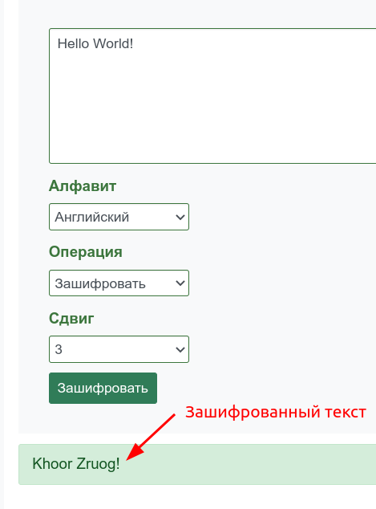
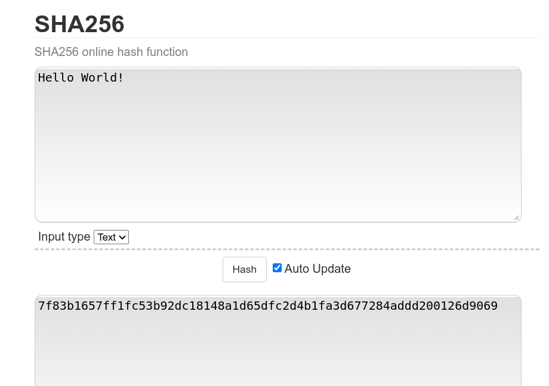
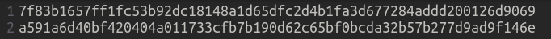
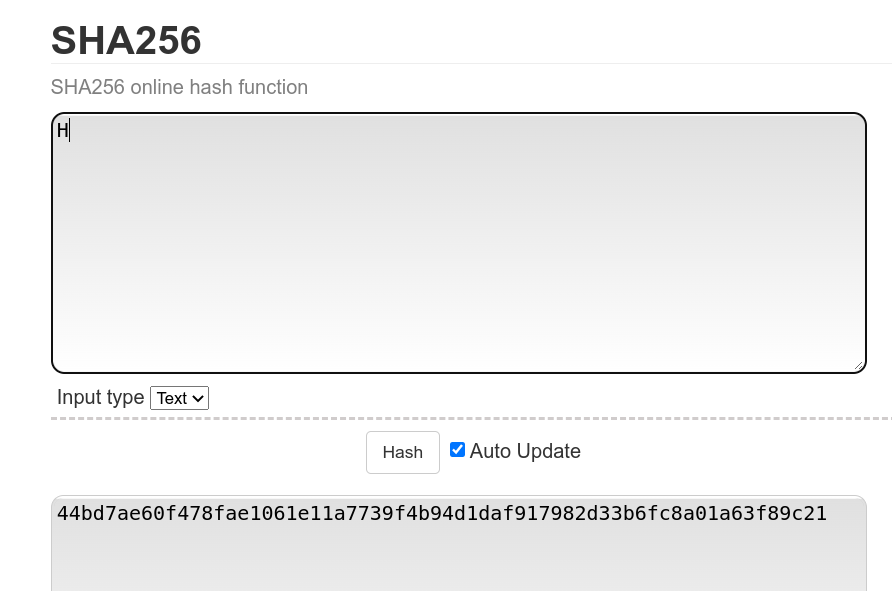
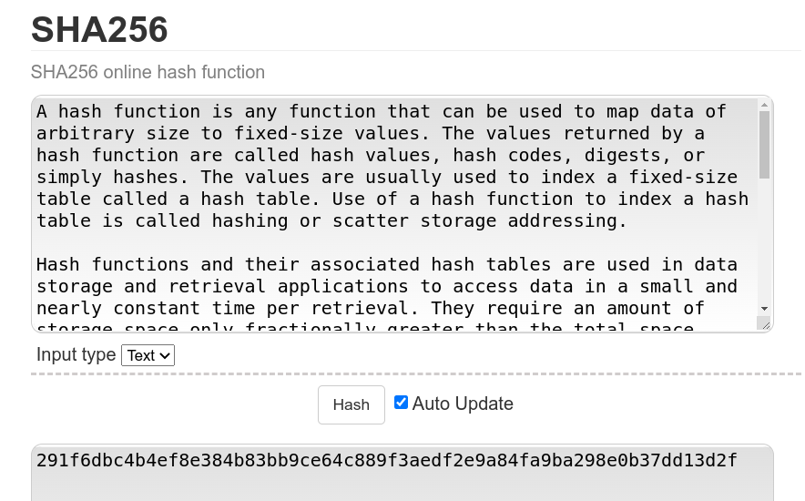

Хеш - це криптографічна функція, яка перетворює будь-який обсяг інформації на унікальний набір символів, який притаманний тільки цьому масиву вхідної інформації. Цей набір символів і буде називатися хешем.
Трохи про криптографію
А тепер більш простою мовою. Є наука криптографія, яка займається шифруванням інформації та забезпеченням конфіденційності. Зараз ця наука має дуже велике значення в сучасному світі. У наш час усі дані шифруються. Ваші листування в соціальних мережах, банківські перекази, передача даних в інтернеті тощо. Насправді криптографія це стара наука, яка бере коріння ще до нашої ери. Спочатку це були досить примітивні способи приховування інформації. Але з часом наука розвивалася і приблизно 50 років тому з'явився клас алгоритмів, які неможливо зламати. Насправді їх можна зламати, наприклад атакою повного перебору, але кількість можливих варіантів настільки велика, що виходить за рамки адекватного часу. Наприклад, для пароля завдовжки 62 біти, в якому може використовуватися 36 символів, зі швидкістю перебору в 100 000 паролів на секунду піде приблизно півтора мільйона років. Інших відомих методів злому сучасних криптографічних алгоритмів немає. Приклади алгоритмів RSA, AES, 3DES.
Приклади шифрування
Хеш теж належить до криптографічних алгоритмів, але в деяких моментах трохи відрізняється. Спочатку подивимося як працюють алгоритми шифрування. Для цього скористаємося шифром Цезаря (насправді це дуже старий алгоритм, який зараз не використовується, розроблений, як можна зрозуміти з назви, ще Гай Юлієм Цезарем, який жив приблизно за 50 років до н.е.), але для прикладу нам його вистачить. Отже спробуємо зашифрувати повідомлення “Hello World!” зі зсувом 3. Зашифрований текст вийде таким “Khoor Zruog!”.
Всі варіанти перестановок
| Перетворення | Перетворений текст |
|---|
| ROT0 | Hello World! | ROT10 | Rovvy Gybvn! | ROT20 | Byffi Qilfx! |
| ROT1 | Ifmmp Xpsme! | ROT11 | Spwwz Hzcwo! | ROT21 | Czggj Rjmgy! |
| ROT2 | Jgnnq Yqtnf! | ROT12 | Tqxxa Iadxp! | ROT22 | Dahhk Sknhz! |
| ROT3 | Khoor Zruog! | ROT13 | Uryyb Jbeyq! | ROT23 | Ebiil Tloia! |
| ROT4 | Lipps Asvph! | ROT14 | Vszzc Kcfzr! | ROT24 | Fcjjm Umpjb! |
| ROT5 | Mjqqt Btwqi! | ROT15 | Wtaad Ldgas! | ROT25 | Gdkkn Vnqkc! |
| ROT6 | Nkrru Cuxrj! | ROT16 | Xubbe Mehbt! | ||
| ROT7 | Olssv Dvysk! | ROT17 | Yvccf Nficu! | ||
| ROT8 | Pmttw Ewztl! | ROT18 | Zwddg Ogjdv! | ||
| ROT9 | Qnuux Fxaum! | ROT19 | Axeeh Phkew! |
Тепер давайте зашифруємо теж повідомлення тільки без знака оклику, вийде “Khoor Zruog”(повну таблицю вставляти не буду, гадаю і так все очевидно), тобто ми можемо помітити, що зник тільки останній символ, але все інше залишилося таким самим. Можна ще трохи поекспериментувати, наприклад додамо трохи тексту. Тепер вихідне повідомлення буде таким “Hello World. My name is Gaius Julius Caesar!”, а зашифроване таким “Khoor Zruog. Pb qdph lv Jdlxv Mxolxv Fdhvdu!”. Давайте тепер проаналізуємо те що ми зробили, це згодом допоможе нам розібратися з хешем.
Отже, перше, що можна помітити, це збільшення довжини зашифрованого повідомлення. Це і не дивно, в нас збільшився початковий текст, а значить збільшився і зашифрований. Друге що ми можемо помітити, це те що деякі частини збігаються. А саме коли ми шифрували повідомлення “Hello World!” у нас вийшов текст “Khoor Zruog!”. У доповненому варіанті перші символи в нас такі самі. Це означає, що одні й ті самі символи шифруються однаково. У принципі це логічно, інакше як би ми розшифровували потім цей текст. Але як ми побачимо далі, з хешем усе трохи інакше.
Хеш(hash)
І так, нарешті ми дійшли до хеша. Так що ж це. Якщо говорити простими словами, то це алгоритм, на вхід якому подають дані, далі він якимось чином перетворює їх, і на виході в нас виходять зовсім інші, абсолютно відмінні від початкових дані.
У хеш функції є декілька важливих властивостей:
- Хеш завжди унікальний для будь-якого масива інформації.
- За найнезначнішої зміни вхідної інформації її хеш повністю змінюється.
- Хеш-функція незворотна і не дає змоги відновлювати вихідний масив інформації із символьного рядка. Це можна зробити, тільки перебравши всі можливі варіанти, кількість яких дуже велика, і за адекватний час це зробити неможливо.
- Хешування дає змогу досить швидко обчислити потрібний хеш для досить великого обсягу інформації.
- Хеш-функція повинна вміти приводити будь-який обсяг даних до числа заданої довжини.
Хеш алгоритмів теж досить багато, і кожен чимось вирізняється, має свої плюси та мінуси. Найпоширеніші алгоритми сімейства SHA-2, наприклад SHA-256 який використовується в Bitcoin або в DSA(цифровий підпис). З популярних ще є SHA-1 і MD5, але для цих алгоритмів було виявлено вразливості.
Приклад використання хешу
Візьмемо початковий рядок “Hello World!”, і використаємо на ньому SHA-256. Отриманий хеш буде наступним “7f83b1657ff1fc53b92dc18148a1d65dfc2d4b1fa3d677284addd200126d9069”. (Ви можете самі поекспериментувати з хешами посилання).
Як можна побачити, ми отримали якийсь незрозумілий набір символів, довжиною 64. Щоб перевірити всі властивості хешів, давайте трохи модернізуємо вихідний текст, наприклад заберемо останній символ(знак оклику). Отриманий хеш тепер такий “a591a6d40bf420404a011733cfb7b190d62c65bf0bcda32b57b277d9ad9f146e”. Давайте їх порівняєм:
Як ми бачимо, вони повністю різні. Тобто це не як у випадку з шифром Цезаря, де ми прибрали один символ і все що до нього, залишилося колишнім, а після - змінилося (у випадку з шифром Цезаря просто б зникло, бо довжина вихідного рядка зменшилася). Тут все не так, навіть найменша зміна вихідного тексту, кардинально змінює захешований. Також ми можемо помітити, що не змінилася і довжина хеша, хоча вихідний текст ми скоротили на один символ. Давайте проведемо ще два тести. Отримаємо хеш від повідомлення довжиною 1, і від якогось великого повідомлення.
Як ми бачимо, хеш, як і раніше, довжиною 64 символи.
Тут як вхідний текст взято визначення хеш-функції з англійської Вікіпедії. Довжина вхідних даних 989 символів.
Отже, подивимося ще раз. Довжина хеша не залежить від довжини вхідного повідомлення. Також ми бачимо, що сам хеш теж дуже сильно відрізняється, навіть за найменших змін вхідних даних. Також важливою властивістю буде те, що обчислити хеш із вхідного повідомлення дуже просто, але навпаки практично неможливо (тільки повним перебором).
Де використовується хеш
Областей, у яких використовується хеш, дуже багато. Одна із них - зберігання паролів. Наприклад є якийсь сайт, на якому можна зареєструватися. Як зазвичай відбувається реєстрація на сайті? Ви вводите логін(свій email зазвичай) і пароль, інколи потрібно вказати ще якісь параметри(наприклад ім'я і прізвище, вік і т.п.), але зараз це неважливо. Всі ці дані, а саме логін і пароль зберіграються в базі даних(БД). При авторизації дані, які вводить користувач, звіряються з тими, що зберігаються в БД, і якщо вони збігаються - авторизація успішна. У всій цій системі є один недолік. Ваші дані зберігаються в незахищеному вигляді. Тобто можлива така ситуація, що базу даних сайту зламає якийсь зловмисник і вкраде звідти всі логіни та паролі користувачів. Чим це загрожує: ну по-перше, у нього тепер є доступ до облікових записів усіх користувачів цього сайту. Що вже досить проблемна ситуація, оскільки якщо це якийсь форум, то злом облікового запису користувача не такий страшний, але якщо це банківський рахунок, то у людини можуть вкрасти всі гроші. Але є ще одна проблема, більшість людей використовують в інтернеті один і той самий пароль і email(тобто вони придумали якийсь пароль, нехай навіть він буде складний) і за допомогою нього реєструються на всіляких сервісах, при цьому навіть не змінюючи його через певну кількість часу. У підсумку зловмисник отримує дані для входу не тільки до конкретно визначеного сервісу, який він зламав, а й, найімовірніше, до інших сервісів, на яких зареєстрований користувач.(найчастіше це можуть бути різні соц. мережі Instagram, Facebook, LinkedIn…).
Хеш вирішує цю проблему. Адміністратору сайту можна не зберігати ваші логін і пароль. Під час реєстрації користувача йому достатньо записати в БД логін, а замість пароля записати хеш. Під час авторизації користувач вводить усе той самий логін і пароль. Сайт порівнює логін із тим логіном, який є в нього в БД, замість пароля він бере його хеш і порівнює з тим, що в нього збережено. Чим це краще? Тепер у разі злому БД сайту, зловмисник зможе отримати всі логіни користувачів, але не зможе отримати їхні паролі, тому що їх просто немає у сайту. Якось отримати пароль з хеша теж не вийде, як ми знаємо захеширувати якусь інформацію легко, але отримати вихідні дані дуже складно(потрібно перебрати всі можливі варіанти, яких ДУЖЕ БАГАТО).
Ще одним застосуванням хеш алгоритмів може слугувати перевірка контрольної суми файлу. Уявіть, що ви завантажуєте файл з інтернету, але під час цього процесу стався якийсь збій, і ваш файл пошкодився. Це не так страшно, тому що ви, найімовірніше, не зможете його використовувати, оскільки буде порушено його цілісність. У такому випадку ви можете просто заново його завантажити. Але може бути й інша ситуація. Наприклад, якась людина (ваш знайомий) хоче передати вам якийсь файл і для цього виклала його на файлообмінник, щоб ви його звідти могли завантажити. Але доступ до цього файлообмінника має не тільки він, а ще якийсь зловмисник, і він узяв і видалив файл вашого знайомого, і встановив туди свій - "поганий" файл. Наприклад вірус. Далі ви завантажуєте собі цей файл, і тепер у вас на пристрої шкідлива програма.
Як таку проблему вирішує хеш. Власник файлу може взяти від нього хеш (оскільки будь-який файл це по суті інформація, набір якихось символів) і разом із файлом надавати для скачування текстовий документ, у якому буде записано цей хеш. Після скачування файлу користувачем, він також може отримати хеш цього файлу і порівняти його з вихідним (адже ми знаємо, що навіть найменша зміна інформації призведе до кардинальних змін хеша). Це може запобігти такій проблемі, що під час завантаження стався якийсь збій, і файл завантажився неправильно. Можна зробити інакше, власник не даватиме завантажити хеш свого файлу, оскільки під час завантаження він теж може пошкодитися або його може перехопити зловмисник і змінити на свій розсуд. Власник може викласти хеш на своєму сайті, щоб користувач, який завантажив файл, зміг порівняти хеш свого файлу з тим, що є на сайті власника. Це більш безпечно.
Також хеш активно застосовується в галузі криптовалют. А саме в блокчейн(blockchain). Блокчейн як зрозуміло з назви це ланцюжок блоків. Блок, простіше кажучи, це безліч транзакцій, які здійснили користувачі - об'єднані в одну цілісну структуру. Для безпеки в кожному блоці зберігається хеш попереднього блоку. У такому разі якщо хтось захоче змінити n-ий блок, то йому потрібно буде змінити всі попередні блоки аж до самого першого, оскільки в кожному блоці зберігається інформація про попередній.
Насправді це не всі варіанти застосування хеша, одна з популярних сфер - це цифрові підписи.
Проблеми хеш алгоритмів
Напевно основною проблемою хеш-алгоритмів є колізії. Колізія це коли два різні набори вхідних даних, мають однаковий хеш. Я наведу приклад колізії на реальних даних, а не на абстрактних рядках. У нас є два різних фото:

Перше фото якогось затонулого корабля

Друге літака
На перший погляд абсолютно різні фотографії, але вони мають однаковий хеш, а саме “253dd04e87492e4fc3471de5e776bc3d”. Ви можете самі це перевірити, зберігши цих два фото і перевіривши їх через цей сайт(або будь-який інший).
То що поганого в цих колізіях. Наприклад, якщо хеш-функція використовується для створення цифрового підпису, то вміння знаходити для неї колізії фактично рівносильно вмінню підробляти цифровий підпис. Тому мірою криптостійкості хеш-функції вважається обчислювальна складність знаходження колізії. В ідеалі не повинно існувати способу відшукання колізій швидшого, ніж повний перебір. Якщо для деякої хеш-функції знайдено спосіб отримання колізій істотно швидший, ніж повний перебір, то ця хеш-функція перестає вважатися криптостійкою і використовуватися для передавання та зберігання секретної інформації.
Інший приклад - кілька користувачів на якомусь сайті мають однакові паролі, то, зламавши один хеш, ми отримуємо доступ до всіх акаунтів, де використовується той самий пароль. Для прикладу: нехай у нас кілька тисяч користувачів, напевно кілька з них використовують пароль “123456” (якщо налаштування сайту не змушують ускладнювати пароль). MD5-хеш для цього пароля “e10adc3949ba59abbe56e057f20f883e”. Тож якщо ви роздобудете цей хеш і пошукаєте в базі даних за цим значенням, то знайдете всіх користувачів із таким паролем.
Чому колізії виникають? Одна з властивостей хешу, це фіксована довжина вихідного повідомлення. Наприклад, кількість різних варіантів хешу певного алгоритму дорівнює 4 мільярдам. А в нас є 5 мільярдів вхідних повідомлень, тоді очевидно, що деякі з різних вхідних повідомлень матимуть однакові хеші, просто тому що їх більше, ніж кількість усіляких хеш-значень.